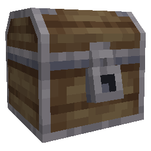

Wanderers of the Rift
Who we are
Wanderers of the Rift (WotR) is a new Minecraft modpack in the ARPG-pack genre. This is a community driven and developed project likely to end up in 1.22 Neoforge Minecraft.
Our Values
- Community Driven
- Open source
- Anyone can contribute
- Polls for decisions & priority ranking
- Distributed leadership
- Accessibility
- Play your way
- Custom configs
- Transparency
- Open communications
- No monetary involvement
How to Contribute
How to Create Pages
1. Get Access to the Repository
To add or edit pages in the mdBook, you need to be a member of the DD GitHub organization. If you haven't received an invite to the GitHub organization yet, please ask one of the organization Owners to invite you.
2. Navigate to the Repository
- Open the GitHub repository by clicking this link: https://github.com/Dimension-Delvers/dimension-delvers-docs/
3. Find the src Folder
- Inside the repository, look for a folder named
src. - This folder contains all the
.md(Markdown) files used in the documentation.
4. Create a New Page
- Click the
Add filebutton and selectCreate new file. - Name your file with a
.mdextension (e.g.,new_page.md). If you want to put the file in a folder, type the folder name followed by a / before the file name (e.g.,folder_name/new_page.md). - Write your content in Markdown format.
5. Edit an Existing Page
- Inside the
srcfolder, find the file you want to edit. - Click on it, then press the
Editbutton (pencil icon). - Make your changes using Markdown syntax.
6. Link Your Page
To make your page accessible from the book’s navigation:
- Open the
SUMMARY.mdfile in thesrcfolder. - Add a new line with a link to your page in this format:
- [Page Title](new_page.md) - Save your changes.
7. Commit Your Changes
- Press the green button in the top right of the page that says "Commit changes..."
- Add a short commit message (e.g.,
Added new_page.md). - Click
Commit changes.
Markdown Quick Reference
- Headings:
# Title,## Subtitle,### Section - Bold:
**bold text** - Italic:
*italic text* - Links:
[text](url) - Lists:
- Item(unordered)1. Item(ordered)
- Code Blocks:
(Remove the backslashes)\```language Code here \```
If you have any questions, feel free to ask in the Discord server
Minimum Viable Product (MVP)
What is an MVP?
An MVP is a product with just enough features to satisfy the early players, and to provide feedback for future mod development. It is a product that is developed with the least amount of effort and resources, but still has enough features to be usable and valuable.
In other words, it is the "simplest" form of the mod as the team envisions it.
Why is an MVP important?
An MVP is important because it allows the team to get feedback from the players early on in the development process. We set up an MVP to get something available fast. Our hope is that by doing so, the team could get to work early, without having to wait for a decision process.
We also firmly believe that seeing is understanding. Having the players actually test the features will help them better understand and allows them to give feedback based on actual experience.
What about the polling process?
We split the tasks in the MVP into 3 categories, Spike, Proof of Concept (PoC) and Feature (see Glossary). While a feature is a certainty, the other two are not. The polling process ican still make these PoCs and Spikes into actual features, but they might also be getting scrapped completely. The developers should be aware that anything they make is not considered final until a poll is done.
The 3 Levels of features
We identify 3 levels of features, with varying degrees of decidedness.
- Feature: Something that is already decided or we have to do this either way. Example: Rift Generation, Structure Generation, Modifier System, Remove Durability
- Proof of Concept (PoC): One of the suggestions given by people. By creating a PoC, we will be able to test it out. If we only have 1 implemented PoC and we are all satisfied, then we might as well make it core. If we have a PoC and people have clear issues with the gameplay it brings, we must spend time on another PoC. Example: Gear Sockets, Skill Crystals, Cost of dying, Abilities
- Spike: A spike is something we know we need, but we have not yet discussed how to do it, or maybe we have discussed it, but no clear path to implementation. Spikes can be very exploratory, sometimes even involving a mini PoC. Spikes generally should not be too long, just enough time to prove it might work. Example: Multiblock Altar, Wireframe Minimap
MVP Featurelist
The MVP contains following features:
- Basic Stat System - Should be easily accessible from other systems
- Spike: Vanilla Attributes => Make a list of Vanilla attributes and missing attributes we need
- Feature: Entity Modifiers, based on vanilla Enchantment code, but better, for max Datapacking power => Usable for Gear Sockets, Implicits, Skill Trees, Food, Collectable unlocks, Levelling system, Champion Mobs, ...
- Ability System
- PoC: Abilities are datapackable and allow for a lot of variety. They have cooldowns and are each triggered by a configurable keybind.
- PoC: Abilities are stored on an item that you equip in a set of special slots
- PoC: Abilities have a randomized Skill Tree that gives minor boosts to the ability.
- Gear
- PoC: Socket System
- Runegems drop that can be applied to gear to give it a modifier
- Runegems have different tiers of power
- Gear can have up to 6 sockets
- Each Socket can only take one shape of runegems
- The Rune Anvil is used to apply runegems to gear
- Vanilla gear can also have Gear Sockets.
- PoC: Enchantments completely removed
- PoC: Socket System
- Rift
- Feature: Player Accessing the Rift (Entering/Leaving) => Dimension Generation
- Feature: Rift Generation in a 15x15 grid => Basic Jigsaw Structure Generation
- PoC: Rift Stability System
- The further away from the rift portal you go, the messier and more difficult to travers the rift becomes.
- The stable areas have easy to traverse terrain and always 4 central exits on the sides.
- The unstable areas still have the 4 exits, but make it more difficult to reach them.
- The chaos areas have different size rooms and corridors, and the placement and number of exits is more randomized. (Not part of MVP)
- Spike: PoIs => Points of Interest
- 3x3, 5x5, 7x7, 9x9
- PoC: Processors are used to generate Themes
- PoC: Simple Cave theme
- PoC: Simple Forest theme
- PoC: Rift Key Creation is done by distilling blocks into essences and these essences help dictate what kind of theme is generated.
- PoC: Portal Block that can be used to make a freestanding portal or one against a wall.
- PoC: RiftMapper, a system to display the rift in a 3D map.
- Rift Content
- Spike: Spawner => Make vanilla mobs spawn in a configurable way using Processors
- Only vanilla mobs will spawn
- PoC: Chests and chestlooting
- just 1 chest for MVP and no chest slicing for MVP.
- Spike: Simplest objective (Kill X monsters)
- Other
- Spike: Keep original Inventory system for rift
- Feature: Removal of durability.
Wanderers of the Rift Mod(Pack) Design
Home Page of The Design Doc
Code Home
Welcome to the Code Home Page. This is where you can find all the code related information for the Wanderers of the Rift Mod(Pack).
Important Code Pages
- Code Decisions: The entry point to general code decisions.
- Design Implementation Pointers: When a design requires specific code pointers, they will be explained here.
Code Locations
Mod
The Mod code is located at the dimension-delvers-mod GitHub Repository.
The intent of the mod is to provide a primary framework for the modpack. In the long term, this should be standalone, but as we start out, we will focus on making the best mod for our own modpack.
Pack
The Pack code is located at the dimension-delvers-pack GitHub Repository.
The pack will add additional things that around the mod to make it a full modpack.
Project Board
Our project board, contains a running list of all our open tasks. Anyone can pick up any ticket on this board. The coordinators will follow up, to ensure everything goes smoothly. The labels indicate the kind of work to be done for a ticket. There are 3 types of tasks on it, Feature, PoC and Spike.
- Feature: Something that is already decided or we have to do this either way. This task is primarily coding work, most details should be ironed out already. Example: Rift Generation, Structure Generation, Modifier System (our better version of enchantments).
- Proof of Concept (PoC): The implementation of one of the suggestions given by people. By creating a PoC, we will be able to test it out, to help deciding if we want to continue on it. PoCs still require a lot of conversation, so try to involve the team as much as possible before implementing things. Example: Gear Sockets, AbilitY Crystals, Cost of dying
- Spike: A spike is something we know we need, but we have not yet discussed how to do it, or maybe we have discussed it high level, but no clear path to implementation. Spikes can be very exploratory, sometimes even involving a mini PoC. Spikes generally should not be too long, just enough time to prove it might work. A lot of the work in a spike will be conversation, make sure to take control of any Spike topic you pick up, including summarizing any ongoing discord conversation on the topic (if not already done by a Coordinator). Example: Multiblock Altar, Wireframe Minimap, fishing
Datapack formats in WotR
A lot of the content in WotR is added through a unique datapack format. Modpack makers can fully customize how specific things look and behave through easy to understand datapacks. Adding the datapack works exactly as it does in vanilla minecraft, so it shouldn't pose too much troubles.
Datapacks?
New to making a datapack? The MC wiki's datapack creation page has you covered. Just imagine the below formats to be in the very same vanilla list and everything will work out just fine.
Wanderers of the Rift namespace
The namespace in a datapack works a bit like the mod name. Mods have their own datapacks included with their own namespace. The Wanderers of the Rift mod's namespace is wotr. In this namespace we have added some basic examples that can guide you to create some new unique variations.
Datapack Format List
Modifiers
Modifier
Modifiers are the core of the WotR upgrade system.
Location
data/wotr/wotr/modifier Take note of the second wotr.
Format
tier: A number representing the tier of the effect.modifiers: A list of modifier effects that will be applied to the entity by this modifier.
Implementation Guidelines
- A modifier should have a name that describes its intention. The explanation of the modifier can be found in the modifier effects. The name of the modifier should ideally follow the format:
<name>_t<tier>. - Ideally there is a modifier defined for every tier.
- You select one or more from the modifier effects described below and add it in the
modifierslist.
Example
{
"tier": 1,
"modifiers": [
{
"type": "wotr:attribute_modifier",
"id": "minecraft:flat_attack_damage",
"attribute": "minecraft:attack_damage",
"min_roll": 1,
"max_roll": 3,
"operation": "add_value"
}
]
}
Note on rolls
A roll is used to calculate the correct value of a modifier effect. This roll is a number between 0 and 1. It uses the roll value determined by the modifierInstane owner of the modifier.
The final calculation is usually something like: min_roll + ((max_roll - min_roll) * roll)
AttributeModifierEffect
Format
type:"wotr:attribute"id: The id is used to uniquely identify this attribute modifier efect in the list of modifier effects for this modifier. This is necessary to identify the correct attributes to remove when the item is removed.attribute: The attribute adjusted by this effect.min_roll: The minimum value that can be rolled for this effect.max_roll: The maximum value that can be rolled for this effect.operation: The operation to perform on the attribute. Can beadd_value,add_multiplied_base,add_multiplied_total. See vanilla AttributeModifier for more information.
Usage
Each effect will add a random value between min_roll and max_roll to the attribute of the entity. The operation will determine how the value is added.
Example
{
"type": "wotr:attribute_modifier",
"id": "minecraft:flat_attack_damage",
"attribute": "minecraft:attack_damage",
"min_roll": 1,
"max_roll": 3,
"operation": "add_value"
}
Tags
The vanilla tag system is used to maintain the tags. Modifier tags will be used to select a modifier from a list of modifiers.
Location
data/wotr/tags/wotr/modifier
Format
values: A list of modifier ResourceLocations.replace: If true, the tag will replace the previous version of the tag. If false, it will add to the previous tag. Should not be used
Example
{
"values": [
"wotr:modifiers/flat_attack_damage"
]
}
Runegems
Runegem Data
Runegem Data files are used during the creation of runegems. They are used to define the properties of the runegem and the modifiers it will have when applied to an item.
Location
data/wotr/wotr/runegem_data Take note of the second wotr.
Format
shape: The shape of the runegem. This is a string that represents the shape of the runegem. Taken from the possible shapes.circlesquaretrianglediamondheartpentagon
tag: A tag of modifier effects that will be applied to the entity by this modifier.tier: The tier for this modifier. For now, we do not use all values.raw: USED, lowest tier.shapedcut: USED, mid tier.polishedframed: USED, highest tier.unique: USED, unique tier, no random effects.
Implementation Guidelines
- A runegem should have a name that describes its intention. The complete name should be the format:
<tier>_<name>_rune. - The explanation of the tag can be found on Modifiers. The name of the tag should ideally be identical to the runegem name.
- The content of the tag can overlap with content from higher tiers. For example, a
cutrune can have the stronger content from therawrune, but it should also have its own content.
Example
{
"shape": "circle",
"tag": "wotr:modifiers/cut_health_rune",
"tier": "cut"
}
Style Guide
Rules for making models, textures and animations. These are meant to keep our art coherent.
Importance
Not all rules are quite as important as others. Because of this we will be marking them with a symbol of how important they are. These symbols are as follows:
- ❔General guideline
- ⚠️ Try not to break
- 🛑 DO NOT BREAK EVEN IF YOU'RE WHOLE FAMILY'S LIVES ARE AT STAKE
General
Rules that apply for everything.
Textures
- 🛑 All textures should be 16x textures.
Models
- ⚠️ UV should use box UV as much as possible. This is to make it easier for others to understand our textures.
Blocks
Textures
-
⚠️ Try limit the shades of different materials to 6 colors or less.
-
⚠️ Use slight hue shifting for the different shades
Models
-
🛑 The only blocks that should be allowed to have more complex models are block entities, crafting stations and light blocks.
-
🛑 Blocks must fit inside a 16 cube3 volume, with the exception of conditional animations.
Animations
- ⚠️ Keep the amount of parts that move all the time within reason.
Examples

Made by: Wh4I3
Software and Technologies
All the software we all should be using
Processor Blocks
Name is processor_block_1, the more specific ones have a suffix like: processor_block_1_slab.
| Color | ID | Name | Use |
|---|---|---|---|
| Grey | 1 | processor_block_1 | Walls |
| Orange | 2 | processor_block_2 | Paths |
| Green | 3 | processor_block_3 | Floors |
| Purple | 4 | processor_block_4 | Alt Wall |
| Blue | 5 | processor_block_5 | Dark Floor |
| Yellow | 6 | processor_block_6 | Planks |
| Black | 7 | processor_block_7 | Bricks |
Where walls, paths and floors comprise the bulk of the room.
Alt wall can be used for etching, and indicators like cracks. Dark floor can be used in corners, further away from the path. Planks will (almost) always be planks, for things like bridges. Bricks can be used to indicate a more solid part.
Use these when making builds, both rooms and POIs, so the processors can easily target them.

Water can be used in the build as the themed liquid.
The other processor blocks can be used, but require a custom processor from the builder, and will be room specific, eg. a tree always needing logs.
Room Sizes
The size of a room is indicated with a multiple of the gridlenght, being 15. The number between brackets indicates the fixed multiplier, in X, Y and Z direction, respectively.
Stable (3x3x3), standard room near the start, 47 blocks in every direction, and all doors easely reachable.
Unstable (3xYx3), doors are not easely reachable anymore, and is used as a step between Stable and Chaos).
Chaos (XxYxZ), doors are not in the center of a face anymore, has varying sizes, and makes the generated rift maze-like.
Room Builds
All edges of the rooms need to be at least 3 blocks thick. This is not a hard rule, but try to have >90% of the walls 3 blocks thick
Leave spaces for POIs, which will be randomly generated on set positions. A jigsaw block needs to be placed in the center of the POI location.
Chaos rooms need 1/3 of their doors to remain open, with the jigsaw blocks inside them. Those doors need to be scattered around the room. The other doorways can be covered by processor blocks, but not by bedrock.
Room Naming
The created room has to be saved using the following structure:
wotr:rift/room/stability/XYZ/roomname ,
Where Stability is Stable, Unstable or Chaos, XYZ is the size in every direction (1, 2 or 3), and roomname is the name of the room, chosen by the builder.
Example: wotr:rift/room/stable/333/test_room.
POI sizes
The POI sizes will be (X, Y, Z):
(3, 3, 3)*, (5, 5, 5), (7, 6, 7), (9, 8, 9), (11, 9, 11)*.
This is the outer size of the POI, not counting the floor layer.
*Up for debate, might very well be removed.
POI naming
To be decided
Mod Development Resources
Intellij Download (scroll down to the free community edition)
Kaupenjoe's Tutorials (follows along with a lot of the neoforged documentation
Glossary
Mod
- Dimension Delvers: Old project name.
- Wanderers of the Rift: Current project working name.
- Rift: Current working name for the randomly generated dungeons that the player will enter.
- Rift Key: Current working name for the item that can open a portal to a rift.
- Theme: The visuals and general content that is applied to a rift. Utilizes processors.
Features
- Gear Sockets (PoC): The current working system to manage the modifiers on our weapons and armor.
- Modifier (Feature): Any powerup applied to a player or to something else, will be implemented using the modifier system. This system is comparable to enchantments, but much more advanced and under our control.
- RiftMapper (PoC): An attempt to create a map of the Rift. Will allow us to remove the minimap while in a rift.
- Runegem (PoC): The current working system for crafting your items into better items. Specifically, when applied to a gear socket, it applies a modifier to the related item.
- Transmogs (Spike): A planned system that allows a player to change their looks towards any other collected gear piece.
Project Management
- Contributor: Any person who requested the role in the discord. These people are the amazing group that intend to bring you this mod.
- Coordinator: Per subteam, two coordinators are assigned by popular vote. These coordinators have additional responsibilities within the project. They are responsible for ensuring all topics in their area are summarized and followed up on. You can contact your coordinator for any questions and challenges you face. Their role is purely assistance, they do not have any decisive power.
- PM Group: The small group of Project Managers. Their role is to ensure the project moves forward. They break ties and they ensure the team remains on focus.
Dev Technical
General terms
- Java: The programming language used by the team and by Mojang, to make Minecraft and our mods.
- JSON: The language used by datapacks to load data into Minecraft.
- Mojank: A word used by modding people when they refer to a piece of code written by mojang, that causes us to question their and sometimes our own sanity.
- Project Board: An overview of all open tasks for the Mod, you can asses it HERE.
Project Board Tasks
- Feature: Something that is already decided or we have to do this either way. Example: Rift Generation, Structure Generation, Modifier System (our better version of enchantments)
- Proof of Concept (PoC): One of the suggestions given by people. By creating a PoC, we will be able to test it out. If we only have 1 implemented PoC and we are all satisfied, then we might as well make it core. If we have a PoC and people have clear issues with the gameplay it brings, we must spend time on another PoC. Example: Gear Sockets, Skill Crystals, Cost of dying
- Spike: A spike is something we know we need, but we have not yet discussed how to do it, or maybe we have discussed it, but no clear path to implementation. Spikes can be very exploratory, sometimes even involving a mini PoC. Spikes generally should not be too long, just enough time to prove it might work. Example: Multiblock Altar, Wireframe Minimap, Abilities
- Datapack: A task to add a set of jsons as per the datapack formats. This task usually follows up on a relevant code ticket. This can be picked up by people with no skills in java.
Build Technical
- JigSaw: The technical vanilla minecraft system that is used to place a structure into the world.
- Processors: The technical vanilla minecraft system that allows a Structure Piece in a JigSaw to be modified and drastically change its looks.
- Structure Piece: A single piece of a JigSaw structure, in our case, one room.
- Gridsize (lenght): The lenght of a single dimension of the smallest possible room. All other size rooms are multiplications of this (1x, 2x or 3x). The grid value we are working with is: 15.
- roomsize: The size of the rooms, often noted as XxYxZ, and mostly multiples of the gridsize is used, ie: 3x3x3. Note that the Y value denotes height.
- Standard room: Rooms made out of processor blocks, that after being processed, makes the rooms the game is played in. Standard come in varying room sizes.
- Processor blocks: A few groups of blocks that the processor replaces with themed blocks. Those blocks are used in standard rooms, to be themed with a processor every time they are generated in game.
- Theme: A set of blocks linked to each used processor block, all with a weight (probability). The processor uses this to determine which block needs to be used to replace every processor block in the standard room.
- Point of Interest (PoI): A small structure that is generated inside the room, containing mob spawners and loot. They can be either: standing isolated on ground, partly inside the wall, in a corner, or hanging from the ceiling. All can have varying sizes.
- Doorway: A 3x5 hole in the wall, through which a player gets in or out of a room. They are on set locations, often (but not exlusively) 1 on each vertical face, so 4 per room. Rooms are generated from doorway to doorway, with a ring in between.
- Ring: A 3x5x1 ring of blocks, between 2 doorways. They are used to connect rooms, and to generate the next room.
- Stable room: A strictly 3x3x3 room, with a door in the middle of each verical face. All 4 doors are easely reachable from one another, without having to dig or travel large parts of the room. Stable rooms are the first rooms in the rift, and they are straightforward and coherent.
- Unstable room: A 3xYx3 room, with doors in the center only. The doors are not necessarily easily reachable, and a player might require to first travel to a corner, before having access to the door. Mostly used as a room between Stable and Chaos.
- Chaos room: All other rooms that are not Stable or Unstable. Doors are on set places, but not all door are open, and not every face has exactly 1 door. Those rooms are confusing and complex, and are placed on the outside of the rift.
Polls
Process
- Anyone: Open a conversation on a topic in either #project-forum or #future-gameplay-ideas.
- Anyone: Discuss the topic for at least a week.
- Coordinator: Create a new markdown file in the
pollsdirectory. See below for necessary contents. - Coordinator: Inform in #pm-coordinator-chat of the existence of the page.
- PMs: Set up the poll in the #polls channel at the next Project Meeting.
- Anyone: Vote on the poll, you have 1 week to do so.
Poll Format
# Poll Title
## Question
// What is the question you are asking?
## Discussion Thread
// Link to the discussion thread on Discord
## Options
// What are the options for the poll?
### Option 1
// Description of the option
### Option 2
// Description of the option
### Option ...
// More options
Should we remove durability from the mod?
Question
Should we remove durability from the mod? It is by itself already a heated topic. As WotRift is a mod about upgrading your gear, losing an item to durability can be incredibly frustrating.
Discussion Thread
Options
Yes, remove durability completely
Durability will cease to exist in the mod. Items will no longer break. Will affect all vanilla and modded items.
Yes, but only remove for WotRift items
Durability will cease to exist for all items from the WotRift mod. Vanilla items and items from other mods will still have durability.
No, durability should stay
Durability will remain in the mod. Items will still break.
Should we remove enchanting from the mod?
Question
Should we remove enchanting from the mod? It is by itself already a heated topic. WotRift will introduce a new modifier system that will make enchanting fairly obsolete.
Discussion Thread
Options
Yes, remove Enchanting completely
The enchanting table will no longer work and no enchantments can be applied to items. Will affect all vanilla and modded items.
Modded enchants in the pack that are necessary for mod features to work will be reworked into the modifier system.
Design note: Something like this would require an adequate replacement for improving gear. The current Gear Sockets and runegem PoC, applicable to vanilla items too, covers such a need. Other directions with modifiers would require to keep this poll result into account.
Yes, but only remove for WotRift items
The enchanting table will not work for items from the WotRift mod. Vanilla items and items from other mods will still be enchantable, but their enchants will be disabled in the rifts.
Technical note: Disabling enchants in the rift is a very complex endeavor and will require a lot of work. This option thus is considered the worst possible option by the dev team.
No, Enchanting should stay, but disabled in rifts
Enchanting will remain in the mod. Items can still be enchanted as normal. But most or all of the enchants will be disabled in rifts to prevent balancing issues.
Technical note: See previous point.
No, Enchanting should stay and be usable in rifts
Enchanting will remain in the mod. Items can still be enchanted as normal. Rifts will be balanced around this, this will make the modifier system less useful and less impactful, especially when overpowered modded enchants are added. Consideration need to be made to make enchanting the main modifier system.
Notes
Date: February 22 2025 Time: 8PM UTC
== Summary and decisions ==
- A LOT of movements towards MVP in Rune Anvil/Socket, Rift Generation, Modifier System, Inventory Snapshots, Accessibility Configs, Builder Glasses, Rift Entry Portal, 3Dd Rift Mapper, First Chest Variant, Dev Tools.
- Devs please delete branches that have been merged in.
- Rift mapper is running and will be 3d because rift will have height as well.
- Durability is removed from everything because durability is lame.
- Accessibility setting added for different things that can be adjusted.
- Rift entrance visual has been created.
== Game Design ==
Rifts: Rift key - determining what this is/ how the player will create is really important for making progress in MVP Rift entrance, themes, tiered rift levels, spawners, RiftMapper are also things to discuss.
Progression: Skill trees - do we want or no? How do we wanna do them? What is a skill tree? Gear Progression - How do we progress gear? Just modifiers or add more? Gear base - how to make weapon/armor more unique? Skill Mechanic - What type of skills will we have Build-A-Spell - How do we want to do spells and have them easily expandable. Abilities - Endgame - what do we want to do for endgame? What should the player be working for? Please go discuss.
Other: Durability - Gone Unique Biomes - should this be in Overworld? What rift related things do we want to have in overworld? Damage Types - how would we want to implement this? What type of damage types would we want? Eras of Progression - Barry Summary: 5 eras, Era of Exploration keeps it pretty basic and goal is to introduce the player to the core mechanics of the modpack that are different from vanilla minecraft, Era of Expansion we start to add onto the core concepts bringing in some of the more complex aspects such as potentially modifying rifts/gear, skills open up alot more etc., Era of Stabilization/Experimentation Player has a decent grasp on what the pack adds and maybe has a build/playstyle they are actively working towards, or are experimenting with alot of playstyles and builds, Era of Perfection all tools are available to the player, probably the most grindy era focus is on perfecting the build and entering endgame content, Era of Conclusion the player is fully into the endgame and maybe big final boss fight, not all players necessarily make it here and thats ok. For more info see link in links section.
== Art Updates ==
Looking for more input in the art forums, Art Theming/Aesthetic, Art Direction/Rules Looking for more “Mockup Themes” Gore/Eye Theme example shown in slides.
== Upcoming Items ==
- Name vote - in Name ideas - List. You only get one vote so choose wisely!
- Builders go into the build chat and fill out the 2nd pinned form to help with organization of build team. Thread
- Developers check google sheet to make sure your name is listed.
- Reassigning roles to people actively working on different pieces of the project.
== Q&A Time ==
Will we have a game design team at some point? After MVP probably yes but now we are focus on MVP.
== Game Design Links ==
-
Rifts
- Rift Key Construction - Rift Key Construction
- Rift Entrance - Rift Entrance / Rift Entrance mechanism
- Rift Themes - Rift Themes?!
- Tiered Rift levels controlled by the player - tiered rift levels controlled b…
- Spawners - Spawners
- RiftMapper - RiftMapper / Minimaps
-
Progression
- Skill Trees - Game Design - Skill Trees
- Gear Progression - Gear Progression
- Gear Bases - How to differentiate Base Weapo…
- Skill Mechanic - Skill mechanic
- Build-A-Spell - Build-A-Spell
- Abilities - Abilities!
- Endgame - Endgame Idea Collection Thread
-
Other
- Durability - Durability
- Unique Biomes that appear in the overworld - Unique biomes that appear also…
- Damage Types - Damage Types
- Eras of Progression - Eras of Progression
== Next meeting ==
Next week, Saturday, March 1st, 2025 at 8:00 PM UTC
== Give us feedback ==
Please let the project managers know how this meeting went and give us some feedback. https://forms.gle/FBdVuGwqKmZvWcJz6
Notes
Date: February 15 2025 Time: 8PM UTC
== Summary and decisions ==
Project team meeting was prepping powerpoint shown in meeting.
- Kudos to Wh4l3 for creating the mimic chest!
- Shoutout to andydirk88 for creating powerpoint.
- Shoutout to maloki, jj, and others for setting up wizard with gun community event.
Time for people to shoutout others: Shoutouts in chat to Patrigan, spinny donkey creation, Barry Allen, he/she/them who says whoosh, WarrenGore, Grimm.
== Summary of this week ==
- Discord reorganization - Categories split, project info contains generic info and links, project announcements is just for project wide announcements. Trying to limit usage of @ everyone to limit pings/mention fatigue. Keep an eye on these channels for update because they will not all have pings.
- Workflow - Forum posts are used for brainstorming/ideas -> Polls are created for community feedback and run by PMs (coordinators can run role specific polls in relevant channels) -> implementation (implementers TBD in “Big Meetings”)
- PM/Coordinator channel created for discussion between PM team and coordinators.
- Draft CoC created
- Art assets and requests forum created (Read pinned post with guidelines) Wold's VaultsLinks and Resources
- mdBook setup - will be home for documentation in the future, please use this instead of other sources of external documentation for this project.
== MVP Updates ==
- Rune Anvil/ Socket - we have made some progress on this and there is ongoing discussion on modifiers and values.
- Rift Generation - we have some processors being developed as well as dimensions and builds.
- Join/Death snapshot system - snapshots inventory to help with revive system and other systems
- Abilities - getting foundation of ability system implemented
== Upcoming Milestones ==
Documentation - Need to agree on documentation, move ideas/decisions to mdBook for better discussions.
== Coordinator Updates ==
- Dev Team (Patrigan)
- No big updates from dev, main topic is small excel file was made for people to fill out who are interested in doing dev work. Wold's VaultsDev Team Members Also working on getting a better system to have more devs able to work on things.
- Build Team (jjo240)
- Poll on build length , build world being updated to superflat wait on new builds till world is converted. Builds using processor blocks.
- Art Team (ZXMBIE)
- Coords are working on mood board for style and direction, working with other coords to determine what workflow will be best. Also assets and requests form.
- Lore Team (Dread)
- Lore will build on mechanics as they are developed. Some discussion on bounty and quest system having some lore behind it. Working on integration of sages.
- Community Team (Barry Allen)
- Working on CoC, AI discussion, what is CoC, difference between CoC and community guidelines.
== Upcoming Items ==
Poll for CoC with 3 options - 1. Yes I approve of version 1 (can still change but we move forward with this), 2. No, I dont like it but I will agree to it, and 3. I wont be able to participate with this version of the CoC.
== Q&A Time ==
Name Poll - React to names in name list so we can determine the top 10 for a poll.
== Next meeting ==
Next week, Saturday, February 22, 2025 at 8:00 PM UTC
== Give us feedback ==
Please let the project managers know how this meeting went and give us some feedback. https://forms.gle/VhzLPqU2oA71C19w8
-
Clear Commit Messages
-
Consistent and clean Package structure
-
1.21.4 branch being made
-
Tool discussion thread
-
Theming thread
-
Rift / Dimension generation being done by Harley
-
Poll to be made in #general for then 11x11 or the 15x15
-
Enchantments to be yeeted
- A1qs volunteered to remove them
-
Do we need to separate forums?
-
Forums for outside discussion
-
Subreddit: https://www.reddit.com/r/WanderersoftheRift/
-
Name needed to really settle on the correct subreddit
- Thread for name brainvomit
- Poll for 1 week to decide
-
Notetakers for the future
- Collaborative note taking
-
Discord reorganization thread incoming
-
Rift Crystal generation
-
Multiblock altar?
-
Weekly meetings in the beginning, lowered frequency further in the project
-
andykirk88 also asked about a request board for art coordinatiors, where requests can be posted
-
Announcements / poll channel should be done for better organization (can be discussed in Discord Reorganization)
-
Ideas for reorganization and for naming will be in forum posts kept up for around a week, after that polls to gauge consensus (polls to be up for a week)
Notes
== Summary and decisions ==
Discussion on our values and what sets us apart. (see slide)
Big shoutout to Wh4l3 for the work they have done this past week.
Tie breaker poll for name decision Wold's VaultsName ideas - List
== MVP Updates ==
Key forge demo - rift key forge shown with different materials and different rift tiers being able to be created from more “expensive” materials. Materials used determine the theme of the rift. New portal texture and it is very cool.
Rift update - Portal room has 4 entrances/exits, performance side needs some work, rift level determines rift size, level 20 rift is bigger than the biggest vaults in VH, hallways are being removed.
Ditto Blocks - Added blocks that can copy the texture of other blocks, which allows us to give blocks different properties. One that was showcased was “Spring Blocks” which would have a trampoline like effect for the player. There is slight differentiation so you can tell the difference, they can be traps or be mined and used as a tool. “Trap Blocks” were also shown which disappear after a short time to drop the player below. There are also variations specifically to trigger on mob vs player.
Build server - needs more rooms and more POI’s please fill out form in build section for room ideas, feedback on rooms, take note of the structures and the processor blocks that have code currently, if you need a special one make note of it and preferably also code it. There is a room section and a POI section, we need more thoughts/examples for both.
== Future ==
MVP SoonTM (internally goal is to have something by the end of the month).
== Q&A ==
No questions.
== Next meeting ==
Next week, March 8 2025 Time: 8PM UTC
Notes
== Kudos and Recognition ==
Wh4l3 for new artwork, Patrigan for patrigan, Divides By Zero for work on skill leveling, Robotmonkey for work on abilities branch.
== Summary and decisions ==
Tiebreaker poll for name - Wanderers of the Rift won! We will start using the new name.
New channel called community polls - used for polls to community, 1st poll is durability poll to decide if we are keeping durability.
Enchanting - do we want Vanilla like enchanting in the game and to what extent. Check out discussion in the forums. Probably going to have poll on enchanting poll next week.
== MVP Updates ==
We really need rooms! We only have two rooms and one POI.
Builds are really important so we can have interesting rifts. We are wanting to aim for even more than VH.
Don't be afraid to throw something down even if you don't consider yourself good at building.
Decision Process - Discussion in voice or chat -> Idea polishing in Forums -> Polling for options (more than 2) -> Guidelines / Results published on mdBook once decision is taken -> Changes/Actions timelines depending on decisions.
Also reference guide in mdBook: https://dimension-delvers.github.io/dimension-delvers-docs/polls/polls.html
We wont have a playtesting team, everyone is the playtesting team
== Deemos ==
Skill gem demo from Divides By Zero - Different gems would be upgradable with different number/tier of options. Skill trees are randomly generated per gem, so two base gems are not necessarily going to end up being the same.
Ability demo from Patrigan created by RobotMonkey - ability that summons skeletons and then they explode and die when they hit the ground. Cooldown indicator top left. Summoning of skeletons is completely configured using datapacks. We have alot of flexibility and depth that can be done using the current system. Ball Ball ability which has bouncy balls. Think of making abilities that work well together.
== Next meeting ==
Next Week, March 15. Due to dailylight savings, check Event in Discord for precise time.
- Coordinators
- Closed Polls
- As Patrigan won both build and dev we offered option to give up one or keep both.
- Alternative where we got a 3rd builder coordinator was choosen and agreed on by the management team + Patrigan
- Build:
- Patrigan, wouts, JJ
- Community:
- Req, Barry Allen
- Art:
- ZXMBIE, Mawbit
- Dev:
- attackeight, Patrigan
- Lore:
- Dread, PseudoSquared
- We would like a summary of the major discussions occuring in each channel to be recordded when possible
- Coordinators should poll the community for design descisions
- Closed Polls
- Gitbooks
- More discussion about moving content and getting access
- Harley will take lead on updating Readme
- Community coordinators will be in charge of working with the community on building up a Contributing.md and Code-of-Conduct.md files
- hey shouldn't have to write it all but work with the community to create it
- Big Meeting Planning
- Talk about MVP
- Gear
- Ability POC
- Tools?
- Rift Generations
- Structure Generation
- Trinkets